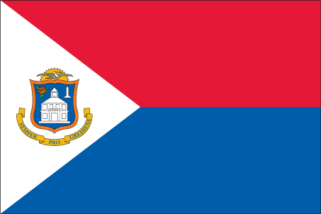

|

|
| Flag Description |
two equal horizontal bands of red (top) and blue with a white isosceles triangle based on the hoist side; the center of the triangle displays the Sint Maarten coat of arms; the arms consist of an orange-bordered blue shield prominently displaying the white court house in Philipsburg, as well as a bouquet of yellow sage (the national flower) in the upper left, and the silhouette of a Dutch-French friendship monument in the upper right; the shield is surmounted by a yellow rising sun in front of which is a Brown Pelican in flight; a yellow scroll below the shield bears the motto: SEMPER PROGREDIENS (Always Progressing); the three main colors are identical to those on the Dutch flag
note:
the flag somewhat resembles that of the Philippines, but with the main red and blue bands reversed; the banner more closely evokes the wartime Philippine flag
|
|
|